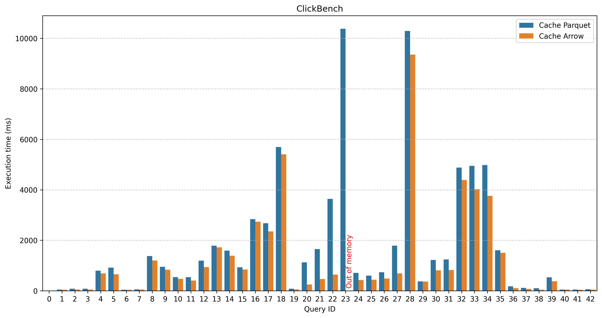
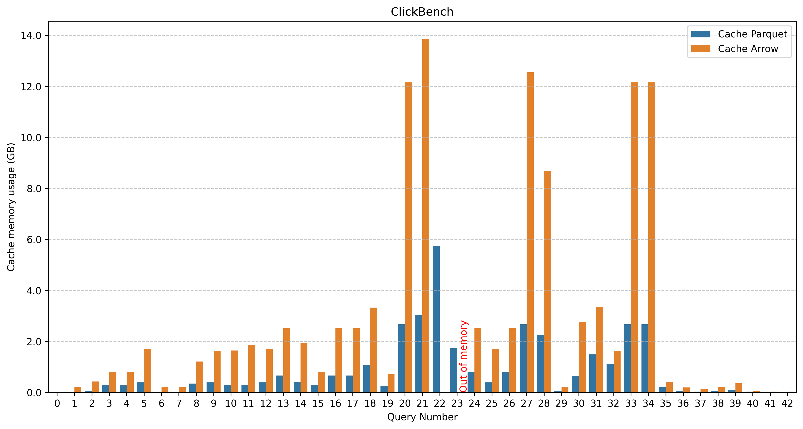
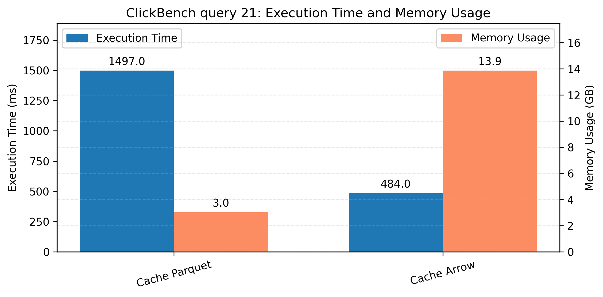
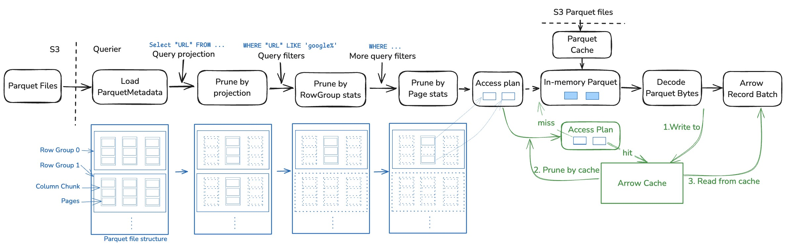
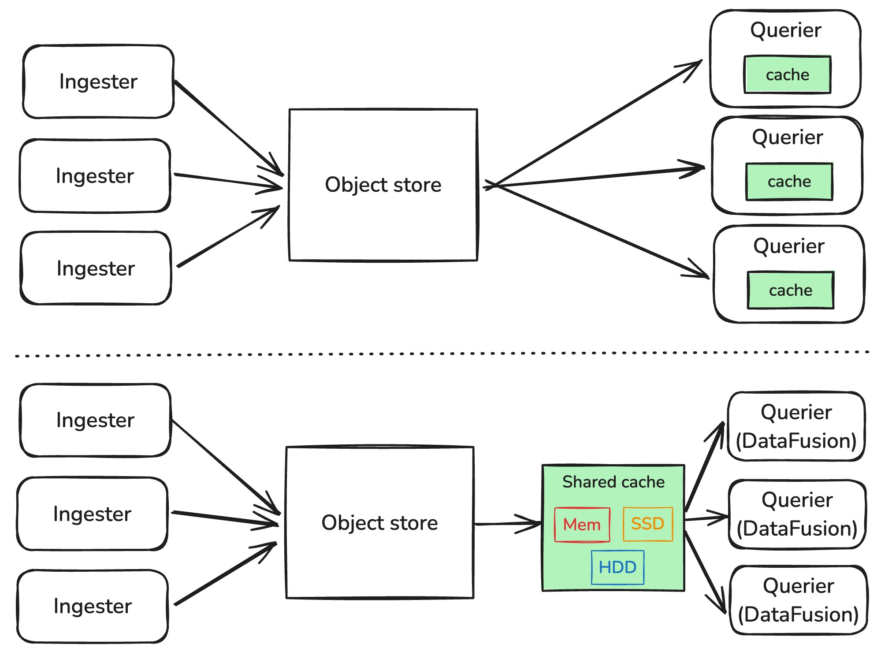

📢📢📢 Checkout LiquidCache, an open-source caching solution that reduces latency by 10x for cloud-native DataFusion.
Note: my research is funded by InfluxData, which made this blog post possible.
In the last post, we discussed how DataFusion prunes Parquet files to read only the necessary data. This post explores DataFusion’s caching mechanisms, which help avoid repeating reads to object storage.
Current state
DataFusion provides a flexible and layered caching architecture that enables developers to optimize data access at multiple levels. The caching system is designed to be extensible, allowing custom implementations while providing sensible defaults. Let’s examine the built-in caching mechanisms that make DataFusion efficient.
1. List files cache
The list files cache optimizes directory scanning operations in DataFusion. When a ListingTable needs to access files in a directory, it first checks this cache before performing expensive filesystem listing operations.
This cache is implemented as a simple but effective HashMap that stores directory paths as keys and lists of file metadata as values. The metadata includes important file information like size, last modified time, and other attributes that would otherwise require filesystem/network calls to retrieve:
struct ListFilesCache {
cached: HashMap<Path, Vec<ObjectMeta>>,
}2. File statistics cache
The file statistics cache stores important statistics about each file, such as row count and column statistics (min/max values). These statistics are used by DataFusion’s query optimizer to make better execution decisions, like pruning files that cannot contain matching data.
The cache avoids having to recompute/re-decode these statistics for each query by storing them in a HashMap that maps file paths to both file metadata and statistics:
struct FileStatisticsCache {
cached: HashMap<Path, (ObjectMeta, Statistics)>,
}3. Parquet metadata cache
Getting Parquet metadata can be costly for two main reasons:
- Network overhead: It requires up to 2 separate network requests to retrieve the raw metadata bytes - one for the footer offset and another for the actual metadata
- Processing overhead: Decoding the metadata can be computationally expensive, especially for tables with many columns
To address these challenges, DataFusion provides the ParquetFileReaderFactory trait. This trait allows developers to implement custom metadata handling strategies. The factory returns an AsyncFileReader that separates metadata access from data page access, enabling different caching and optimization approaches for each:
pub trait AsyncFileReader: Send {
fn get_metadata(&mut self) -> BoxFuture<'_, Result<Arc<ParquetMetaData>>>;
fn get_bytes(&mut self, range: Range<usize>) -> BoxFuture<'_, Result<Bytes>>;
... // other methods
}4. Parquet file range cache
Lastly and most importantly, DataFusion caches the Parquet file ranges that have been read.
Under the hood, DataFusion uses object_store to interact with the S3, GCS, or local filesystem. While object_store provides a unified interface for different storage backends, but it does not implement caching by default.
However, DataFusion’s flexible architecture allows developers to implement custom caching strategies by implementing the AsyncFileReader trait. This enables optimizations like:
- Caching frequently accessed data ranges in memory
- Implementing tiered caching (e.g., memory + local disk)
- Adding compression to reduce memory usage
- Implementing cache eviction policies based on access patterns
Notably, the AsyncFileReader trait has a get_bytes_ranges method:
pub trait AsyncFileReader: Send {
... // previously mentioned methods
fn get_byte_ranges(&mut self, ranges: Vec<Range<usize>>) -> BoxFuture<'_, Result<Vec<Bytes>>>;
}The default implementation of get_byte_ranges simply calls get_bytes sequentially for each range, which can be inefficient when reading many small ranges. This is because each range requires a separate network request, leading to higher latency and costs.
However, developers can implement their own IO coalescing logic to optimize performance. For example, they could:
- Merge adjacent or overlapping ranges to reduce the number of requests
- Batch multiple small ranges into a single larger request
- Implement prefetching for ranges likely to be needed soon
These optimizations can significantly improve read performance and reduce storage costs, especially when working with remote storage like S3 or GCS.
So far we have discussed the core caching mechanisms built into DataFusion. These caches work together to optimize different aspects of query execution, from file discovery to data access.
The following sections will explore more advanced topics and future directions for DataFusion’s caching capabilities.
Caching Arrow
Arrow is the in-memory columnar format that DataFusion uses to process data efficiently. Before DataFusion can execute any query logic, Parquet data must be decoded into Arrow format. This decoding process involves decompressing the data, converting between data types, and validating constraints - operations that recent research1 has shown can be a performance bottleneck for many analytical workloads.
One promising optimization approach is to cache the decoded Arrow data rather than the raw Parquet bytes. This allows us to skip the expensive decoding step on subsequent queries, potentially improving query latency significantly.
The figure below compares query latencies between two caching strategies using the ClickBench benchmark suite. The x-axis shows the query ID (0-42) and the y-axis shows query latency in milliseconds (lower is better). For each query, we measure the latency when caching the raw Parquet bytes versus caching the decoded Arrow arrays.

Takeaways
- Caching Arrow consistently outperforms or matches caching Parquet across all queries.
- The performance gains vary significantly:
- Scan-intensive queries (Q20-Q23) show the largest improvements, with up to 3x speedup, since they benefit directly from avoiding Parquet decoding
- Aggregation-heavy queries (Q8-Q18) see more modest gains, as their execution time is dominated by computation rather than data access
- Memory usage can be a concern - Q23 triggered an out-of-memory error when caching Arrow data, highlighting its excessive memory usage.
But at what cost?
While caching Arrow data can significantly improve query performance, it comes with substantial memory overhead, as demonstrated by Q23’s out-of-memory error. The figure below compares memory usage between caching Parquet versus Arrow data across the benchmark queries. Since each query was run independently, the measurements reflect the memory requirements for executing a single query in isolation.

Takeaways
- Parquet achieves roughly 4x-5x compression ratio compared to Arrow’s in-memory format
- The benefit of caching Arrow data varies, but its cost is consistently 4x-5x higher memory usage.
Zoom-in a bit
Now we take a closer look at Q21 – one of the queries that benefit a lot from caching Arrow:
SELECT "SearchPhrase", MIN("URL"), COUNT(*) AS c
FROM hits
WHERE "URL" LIKE '%google%'
AND "SearchPhrase" <> ''
GROUP BY "SearchPhrase"
ORDER BY c
DESC LIMIT 10;The query scans two string columns (“URL” and “SearchPhrase”) and applies a filter on them.
Let’s now compare their query time and memory usage – we got roughly 3x speedup by using 4x more memory, not bad! 
How to cache Arrow?
The figure below builds on the architecture from our previous post, adding the new Arrow cache component. The Arrow cache is positioned between the ParquetAccessPlan and the decoded Arrow RecordBatch. When a query requests data:
- First, we check if the requested RecordBatch exists in the cache
- If found, we can skip both fetching and decoding the Parquet data by pruning the AccessPlan
- If not found, we fetch and decode the Parquet data as normal, then insert the resulting Arrow RecordBatch into the cache for future use

Although the architecture is simple, implementing it faces several challenges:
- How to map Parquet byte ranges to the corresponding Arrow RecordBatches
- Granularity/shape of caching – column-level vs batch-level caching.
- How to efficiently test if the cached ranges contains the requested range? E.g., request range (1024, 2048), but cached ranges has [(0, 2049), (4096, 3072)].
- Memory management – implementing efficient spill-to-disk strategies
We are actively working on solutions to these challenges as part of our research into high-performance Arrow caching systems. Our goal is to develop practical implementations that can be integrated into production environments. We plan to publish our findings and release the code as open source in the near future. Consider funding my research to support this work.
Standalone caching service
So far we have discussed caching within individual DataFusion instances, as shown in the Figure below (upper). While this approach works well for single-instance deployments, it is wasteful when multiple DataFusion instances access the same data.
A more scalable approach is to implement a standalone shared caching service (lower) that can be accessed by multiple DataFusion instances, with the following advantages:
- Reduced resource usage - By eliminating redundant caching and decoding across instances, it optimizes both memory and CPU utilization
- Improved manageability - Decoupling the caching logic from compute nodes simplifies scaling and operational management
- Consistent performance - No latency spike after compute node restarts. With stateless compute nodes and a persistent centralized cache, the system avoids cache warmup delays after node restarts

Caching interface
The simplest caching interface treats the caching service as a transparent proxy for object storage. The service implements DataFusion’s AsyncFileReader trait to intercept Parquet file reads, caching byte ranges as they are accessed.
The bytes are transferred between DataFusion and the cache service using HTTP and can be implemented in any programming languages. This simple interface requires minimal changes to DataFusion.
A more sophisticated approach is to implement caching through the Arrow Flight protocol, with the caching service running as a full DataFusion instance capable of executing query plans. Rather than just serving cached bytes, this design allows the caching service to process queries directly.
When a querier needs data, it sends the complete ParquetExec physical plan to the caching service. The service can then:
- Execute the plan against its cached data
- Apply filters and projections directly on the cached data (filter pushdown)
- Return only the necessary Arrow RecordBatches to the querier
This architecture provides several advantages: - Reduced network transfer by filtering data at the cache layer - Lower client-side CPU usage since filtering happens at the cache
The tradeoff is increased complexity in both the client and cache service implementations compared to the simple byte-range caching approach.
Caching medium
The standalone caching service allows a diverse set of storage mediums to optimize the performance and cost.
The most obvious choice is to cache data in memory, which is fast but expensive. We can do better by spilling the data to SSD when memory is full, and to HDD when SSD is full.
Conclusion
In this post, we discussed DataFusion’s caching mechanisms and explored the potential of caching Arrow data in standalone caching services. We believe that caching is a key component for every cloud-native analytics systems, and my research project is actively building systems that bridges the gap between what academia known as the state-of-the-art and what industry can actually use.
Footnotes
BtrBlocks: Efficient Columnar Compression for Data Lakes (SIGMOD 2023 Paper)↩︎